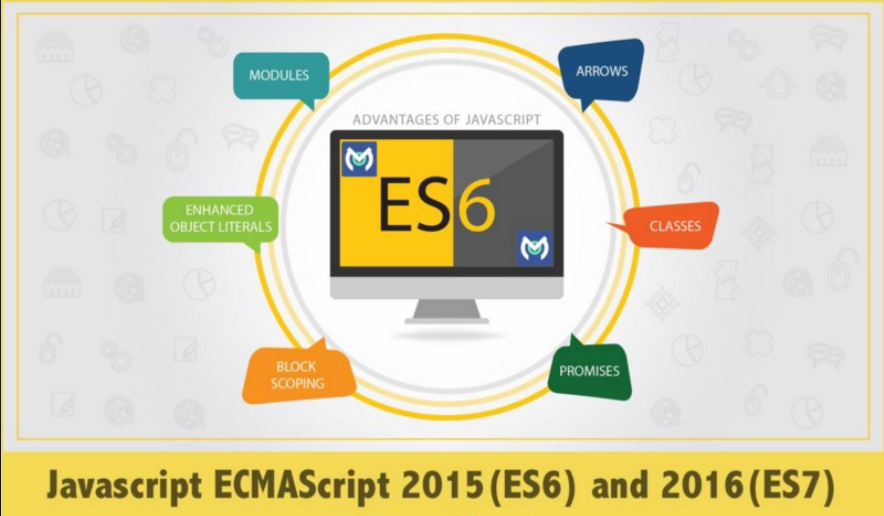
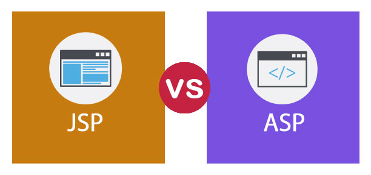
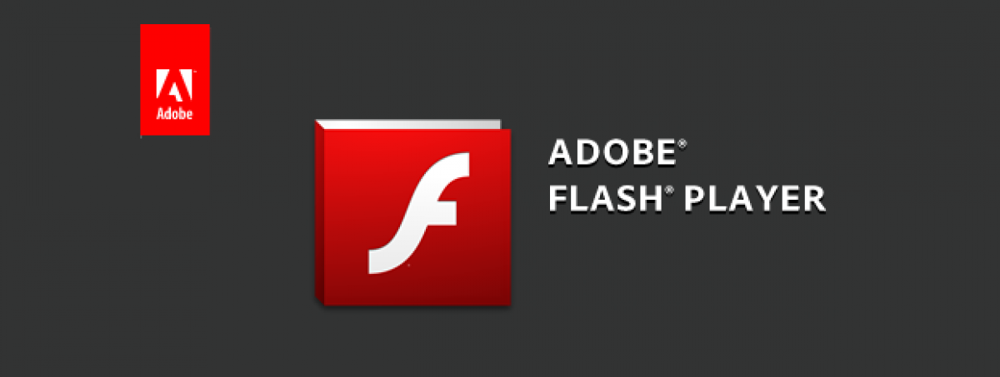

Các giai đoạn phát triển của công nghệ web
Ban đầu, các trang Web là tĩnh, người dùng gửi yêu cầu một tài nguyên nào đó, và server sẽ trả về tài nguyên đó. Các trang Web không có gì hơn là một văn bản được định dạng và phân tán. Đối với các trình duyệt, thì các trang Web tĩnh không phải là các vấn đề khó khăn, và trang Web lúc đầu chỉ để thông tin về các sự kiện, địa chỉ, hay lịch làm việc qua Internet mà thôi, chưa có sự tương tác qua các trang Web. Năm 1990, Tim Berners-Lee, tại CERN, đã sáng chế ra HTML (Hyper Text Markup Language), ngôn ngữ đánh dấu siêu văn bản. HTML rất đơn giản và dễ dùng, và nó trở thành một ngôn ngữ rất phổ biến và cơ bản.
Tuy nhiên, không lâu sau đó, nhu cầu về các trang Web động, có sự tương tác ngày một tăng, chính vì thế sự ra đời các công nghệ Web động là một điều tất yếu. Sau đây là một số công nghệ Web động cơ bản:
-
CGI
Giải pháp đầu tiên để làm các trang Web động là Common Gateway Interface (CGI). CGI cho phép tạo các chương trình chạy khi người dùng gửi các yêu cầu. Giả sử khi cần hiển thị các các mục để bán trên Web site – với một CGI script ta có thể truy nhập cơ sở dữ liệu sản phẩm và hiển thị kết quả. Sử dụng các form HTML đơn giản và các CGI script, có thể tạo các “cửa hàng” ảo cho phép bán sản phẩm cho khách hàng qua một trình duyệt. CGI script có thể được viết bằng một số ngôn ngữ từ Perl cho đến Visual Basic.Tuy nhiên, CGI không phải là cách an toàn cho các trang Web động. Với CGI, người khác có thể chạy chương trình trên hệ thống. Vì thế có thể chạy các chương trình không mong muốn gây tổn hại hệ thống. Nhưng dù vậy, cho đến hôm nay thì CGI vẫn còn được sử dụng.
-
Applet
Tháng 5/1995, John Gage của hãng Sun và Andressen (nay thuộc Netscape Communications Corporation) đã công bố một ngôn ngữ lập trình mới có tên Java. Netscape Navigator đã hỗ trợ ngôn ngữ mới này, và một con đường mới cho các trang Web động được mở ra, kỷ nguyên của applet bắt đầu.

Applet cho phép các nhà phát triển viết các ứng dụng nhỏ nhúng vào trang Web. Khi người dùng sử dụng một trình duyệt hỗ trợ Java, họ có thể chạy các applet trong trình duyệt trên nền máy ảo Java Virtual Machine (JVM). Dù rằng applet làm được nhiều điều song nó cũng có một số nhược điểm: thường bị chặn bởi việc đọc và ghi các file hệ thống, không thể tải các thư viện, hoặc đôi khi không thể thực thi trên phía client. Bù lại những hạn chế trên, applet được chạy trên một mô hình bảo mật kiểu sandbox bảo vệ người dùng khỏi các đoạn mã nguy hiểm.
Có những lúc applet được sử dụng rất nhiều, nhưng nó cũng có những vấn đề nảy sinh: đó là sự phụ thuộc vào máy ảo Java JVM, các applet chỉ thực thi khi có môi trường thích hợp được cài đặt phía client, hơn nữa tốc độ của các applet là tương đối chậm vì thế applet không phải là giải pháp tối ưu cho Web động.
-
JavaScript
Cùng thời gian này, Netscape đã tạo ra một ngôn ngữ kịch bản gọi là JavaScript. JavaScript được thiết kế để việc phát triển dễ dàng hơn cho các nhà thiết kế Web và các lập trình viên không thành thạo Java. (Microsoft cũng có một ngôn ngữ kịch bản gọi là VBScript). JavaScript ngay lập tức trở thành một phương pháp hiệu quả để tạo ra các trang Web động.

Việc người ta coi các trang như là một đối tượng đã làm nảy sinh một khái niệm mới gọi là Document Object Model (DOM). Lúc đầu thì JavaScript và DOM có một sự kết hợp chặt chẽ nhưng sau đó chúng được phân tách. DOM hoàn toàn là cách biểu diễn hướng đối tượng của trang Web và nó có thể được sửa đổi với các ngôn ngữ kịch bản bất kỳ như JavaScript hay VBScript.
Tổ chức World Wide Web Consortium (W3C) đã chuẩn hóa DOM, trong khi European Computer Manufacturers Association (ECMA) phê duyệt JavaScript dưới dạng đặc tả ECMAScript.
 -
JSP/Servlet, ASP và PHP
Cùng với Java, Sun đồng thời đưa ra một công nghệ mới gọi là servlet. Các đoạn mã Java sẽ không chạy phía client như với applet; chúng sẽ được chạy trên một ứng dụng phía server. Servlet cũng đồng thời phục vụ các CGI script. Servlet là một bước tiến lớn, nó đưa ra một thư viện hàm API trên Java và một thư viện hoàn chỉnh để thao tác trên giao thức HTTP.
JavaServer Page (JSP) là một công nghệ lập trình Web của Sun, cùng với nó là một công nghệ khác của Microsoft - Active Server Pages (ASP), JSP là công nghệ đòi hỏi một trình chủ hiểu được Java.
Microsoft đã nghiên cứu các nhược điểm của servlet và tạo ra ASP dễ dàng hơn để thiết kế các trang web động. Microsoft thêm các bộ công cụ rất mạnh và sự tích hợp rất hoàn hảo với các Web server. JSP và ASP có những nét tương đương vì chúng đều được thiết kế để phân tách qua trình xử lí khỏi quá trình biểu diễn. Có sự khác biệt về kỹ thuật, song cả hai đều cho phép các nhà thiết kế Web tập trung vào cách bố trí (layout) trong khi các nhà phát triển phần mềm thì tập trung vào các kỹ thuật lập trình logic. Tất nhiên Microsoft và Sun không độc quyền ở các giải pháp phía server. Còn có các công nghệ khác, trong đó phải kể đến là PHP (Hypertext Preprocessor) cho tới Cold Fusion. Các công nghệ này cung cấp các bộ công cụ rất mạnh cho các nhà phát triển.

-
Flash
Năm 1996, FutureWave đã đưa ra sản phẩm FutureSplash Animator. Sau đó FutureWave thuộc sở hữu của Macromedia, và công ty này đưa ra sản phẩm Flash. Flash cho phép các nhà thiết kế tạo các ứng dụng hoạt họa và linh động. Flash không đòi hỏi các kỹ năng lập trình cao cấp và rất dễ học. Cũng giống như các nhiều giải pháp khác Flash yêu cầu phần mềm phía client. Chẳng hạn như gói Shockwave Player plug-in có thể được tích hợp trong một số hệ điều hành hay trình duyệt.
 -
DHTML
Khi Microsoft và Netscape đưa ra các version 4 của các trình duyệt của họ, thì các nhà phát triển Web có một lựa chọn mới: Dynamic HTML (DHTML). DHTML không phải là một chuẩn của W3C, nó giống một bộ công cụ thương mại hơn. Trong thực tế nó là một tập hợp gồm HTML, Cascading Style Sheets (CSS), JavaScript, và DOM. Tập hợp các công nghệ trên cho phép các nhà pháp triển sửa đổi nội dung và cấu trúc của một trang Web một cách nhanh chóng. Tuy nhiên, DHTML yêu cầu sự hỗ trợ từ các trình duyệt. Mặc dù cả Internet Explorer và Netscape hỗ trợ DHTML, nhưng các thể hiện của chúng là khác nhau, các nhà phát triển cần phải biết được loại trình duyệt nào mà phía client dùng. DHTML thật sự là một bước tiến mới, nhưng nó vẫn cần một sự qui chuẩn để phát triển. Hiện nay DHTML vẫn đang trên con đường phát triển mạnh.
-
XML
Kể từ khi ra đời vào giữa năm 1990, eXtensible Markup Language (XML) của W3C dẫn xuất của SGML đã trở nên rất phổ biến. XML có mặt ở khắp nơi, Microsoft Office 12 cũng sẽ hỗ trợ định dạng file XML.
Ngày nay chúng ta có rất nhiều dạng dẫn xuất của XML cho các ứng dụng Web (tất nhiên là có cả XHTML): XUL của Mozilla, XAMJ, một sản phẩm mã nguồn mở trên nền Java, MXML từ Macromedia, và XAML của Microsoft.